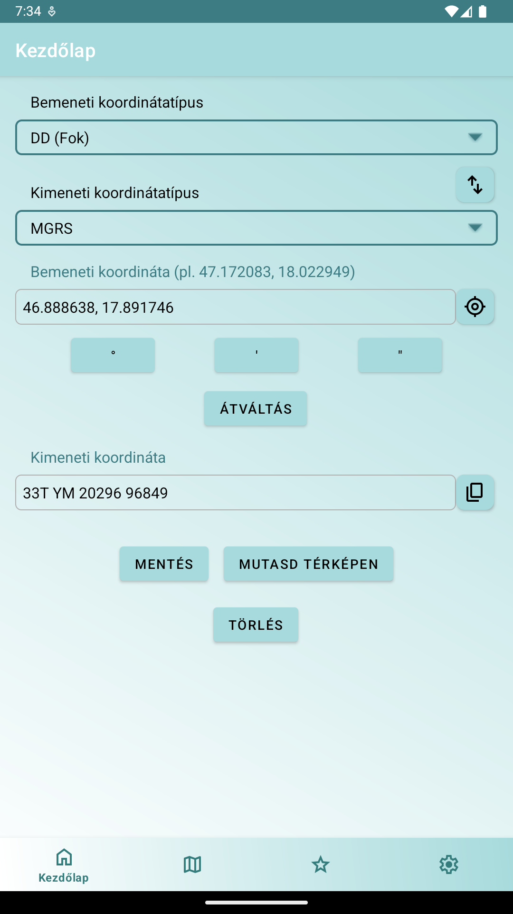

A KoordKonvertről
A KoordKonvertről
KoordKonvert – A koordináta-átváltó app
A KoordKonvert segítségével egyszerűen válthatsz a különböző koordinátaformátumok között, és térképen is megjelenítheted őket. Legyél túrázó, földmérő, katona, rendőr vagy erdész – ez az alkalmazás megkönnyíti a koordináták kezelését. Támogatott: DD, DDM, DMS, UTM, MGRS, EOV (HU) – és hamarosan még több!
Főbb jellemzők:
- Koordináta-átváltás: Pontos és offline DD, DDM, DMS, UTM, MGRS, EOV között.
- Interaktív térképek: OpenStreetMap + opcionális Google Térkép (normál, műholdas, hibrid, terep).
- Helymeghatározás: GPS alapú pozíciólekérés.
- Mentés és kezelés: Kedvencek tárolása időbélyeggel vagy egyedi névvel.
- Másolás és megosztás: Eredmények vágólapra egy koppintással.
- Többnyelvű: angol, magyar, német, spanyol, lengyel, olasz.
- Testreszabás: Beviteli asszisztens, regionális rendszerek, térképtípusok, képernyő-ébrentartás.
- Hirdetésmentes opció: Hirdetések eltávolítása + Google Térkép végleges feloldása.
Hogyan működik?
- Add meg vagy kérd le koordinátáidat GPS-szel.
- Válaszd a bemeneti/kimeneti formátumokat.
- Koppints a Konvertálás gombra.
- Nézd meg térképen, másold vagy mentsd.
Képernyőképek


Miért a KoordKonvert?
- Széles koordinátaformátum-támogatás, köztük a magyar EOV rendszerrel.
- Offline is működik, ideális terepen vagy gyenge térerő mellett.
- Letisztult kezelőfelület, gyors használat.
- Egyedi funkciók: pl. Google Térkép ideiglenes feloldása hirdetés megtekintésével.
Hirdetésmentes használat!
Távolítsd el a hirdetéseket, és oldd fel a prémium funkciókat, mint a Google Térkép, egyszeri vásárlással – vagy nézz egy rövid reklámot az ideiglenes feloldáshoz.
Töltsd le a KoordKonvertet most!
Megjegyzés: A GPS funkcióhoz helymeghatározási engedély szükséges. Adataid biztonságban vannak.
Kapcsolat: hwa.apps.dev@gmail.com